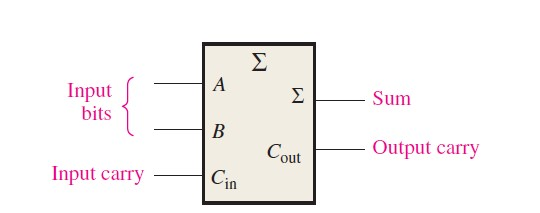
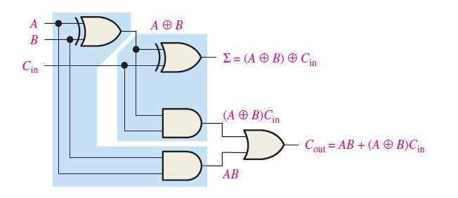
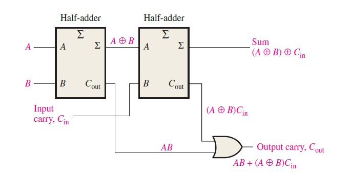
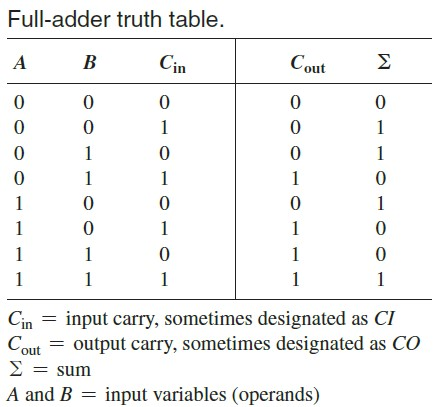

Adders are important in computers and also in other types of digital systems in which
numerical data are processed.
An adder is a device that will add together two bits and give the result as the output.
The bits being added together are called the "addends".
Adders can be constructed for most of the numerical representations like Binary Coded Decimal (BCD), Excess - 3, Gray code, Binary etc.
Binary addition is the most frequently performed task by most common adders.
Types Of Adders
Half-Adder
Full-Adder
Full Adder
Definition
The full-adder accepts two input bits and an input carry and generates a sum output and an output carry.
A full-adder has an input carry while the half-adder does not.

Full Adder Logic
The full-adder must add the two input bits and the input carry.
Sum of the input bits A and B is the exclusive-OR of those two variables, A⨁B.
The input carry (Cin) to be added to the input bits, it must be exclusive-ORed with A⨁B , yielding the equation for the sum output of the full-adder.
∑ = (A ⨁ B) ⨁ Cin
The first must generate the term A ⨁ B, and the second has as its inputs the output of the first XOR gate and the input carry, as illustrated in Figure (a)
The output carry is a 1 when both inputs to the first XOR gate are 1s or when both inputs to the second XOR gate are 1s.
The output carry of the full-adder is therefore produced by input A ANDed with input B and (A ⨁ B) ANDed with Cin.
This function is implemented and combined with the sum logic to form a complete full-adder circuit.
Cout = (A.B) + (A ⨁ B) Cin
The complete full-adder circuit is shown in the below diagram.

The combination of two half adders gives the full adder as shown in figure.

Truth Table

Full Adder Using NAND Gates
The full adder can also be designed with the help of NAND gates.
NAND gate is considered as a universal gate.
A universal gate can be used for designing of any digital circuit.
The minimum number of NAND gates required to design full adder is 9.
Full Adder Using NOR Gates
The NOR gate is also a universal gate.
Thus, it can also be used for designing of any digital circuit.
The Full adder can be designed using 9 NOR gates.
This is the minimum number of NOR gates to design full adder.
Application Of Full Adder
A Full Adder's circuit can be used as a part of many other larger circuits like Ripple Carry Adder, which adds n-bits simultaneously.
The dedicated multiplication circuit uses Full Adder's circuit to perform Carryout Multiplication.
Full Adders are used in ALU- Arithmetic Logic Unit.